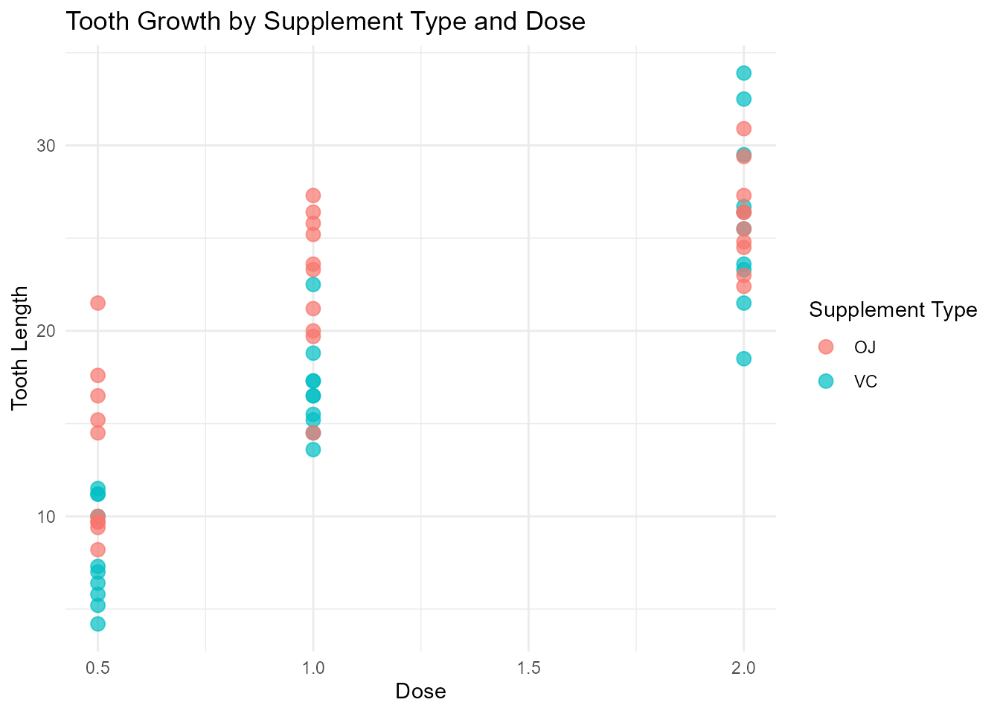
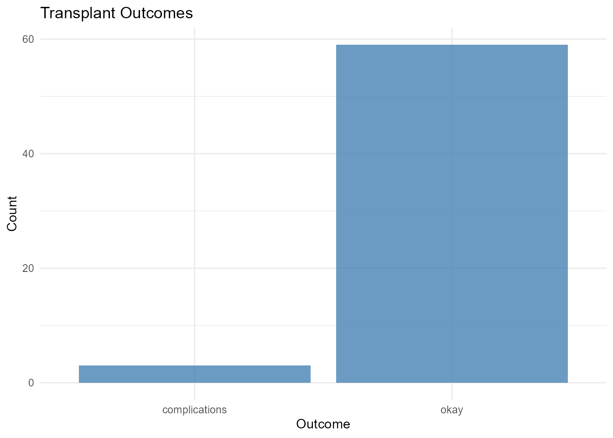
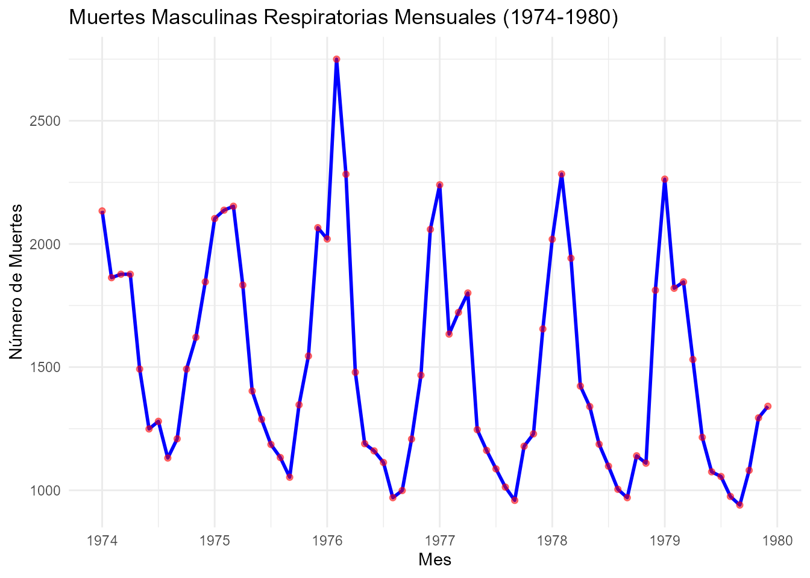

library(MedDataSets)
library(ggplot2)
library(dplyr)
#>
#> Attaching package: 'dplyr'
#> The following objects are masked from 'package:stats':
#>
#> filter, lag
#> The following objects are masked from 'package:base':
#>
#> intersect, setdiff, setequal, unionIntroduction
The MedDataSets package provides an extensive
collection of datasets related to medicine, diseases, treatments, drugs,
and public health. It covers topics such as pharmacokinetics,
drug effectiveness, vaccine trials, survival rates, infectious disease
outbreaks, and medical treatments.
This package is a valuable resource for researchers, analysts, and
healthcare professionals interested in performing in-depth analyses of
medical and public health data in R. The datasets include information on
various health conditions like AIDS, cancer, bacterial infections,
COVID-19, and data on pharmaceuticals and vaccines.All datasets included
in the MedDataSets package have been sourced from the R
ecosystem and other R packages, and the content has not been modified in
any way.
Dataset Suffixes
To help identify the type and structure of each dataset, a suffix is added to the end of the dataset name. The suffixes indicate the format and type of the dataset, such as:
-
df: A standard data frame -
tbl_df: A tibble data frame -
matrix: A matrix object -
ts: A time series object
This makes it easier to work with different datasets by quickly identifying their structure. For example:
-
ToothGrowth_df: The Effect of Vitamin C on Tooth Growth in Guinea Pigs. -
transplant_tbl_df: Heart Transplant Data. -
VADeaths_matrix: Death Rates in Virginia (1940). -
mdeaths_ts: Monthly Deaths from Lung Diseases in the UK.
Visualizing Data with ggplot2
To demonstrate the use of datasets in MedDataSets, we’ll
create some visualizations using the ggplot2 package.
Visualization of Tooth Growth
# Example: Visualizing tooth growth data
ggplot(ToothGrowth_df, aes(x = dose, y = len, color = supp)) +
geom_point(size = 3, alpha = 0.7) +
labs(title = "Tooth Growth by Supplement Type and Dose",
x = "Dose",
y = "Tooth Length",
color = "Supplement Type") +
theme_minimal()
Visualization of Transplant Data
ggplot(transplant_tbl_df, aes(x = outcome)) +
geom_bar(fill = "steelblue", alpha = 0.8) +
labs(title = "Transplant Outcomes",
x = "Outcome",
y = "Count") +
theme_minimal()
Visualization of mdeaths - Monthly Deaths from Lung Diseases in the UK
# Crear un gráfico de serie de tiempo utilizando ggplot2
# Convertir 'mdeaths_ts' en un data frame
mdeaths_df <- data.frame(
month = time(mdeaths_ts), # Extrae las fechas de la serie de tiempo
deaths = as.numeric(mdeaths_ts) # Convierte la serie de tiempo a numérico
)
# Crear gráfico
ggplot(mdeaths_df, aes(x = month, y = deaths)) +
geom_line(color = "blue", size = 1) +
labs(title = "Muertes Masculinas Respiratorias Mensuales (1974-1980)",
x = "Mes",
y = "Número de Muertes") +
theme_minimal() +
scale_x_continuous(breaks = seq(1974, 1980, by = 1),
labels = seq(1974, 1980, by = 1)) +
geom_point(color = "red", size = 1.5, alpha = 0.5) # Añadir puntos para cada mes
Conclusion
The MedDataSets package provides a wealth of
datasets that are essential for analyzing various medical and
health-related topics. By using suffixes to identify the dataset types
and leveraging ggplot2 for visualizations, users can easily explore the
data and extract meaningful insights. For more details on the available
datasets, please refer to the package documentation.